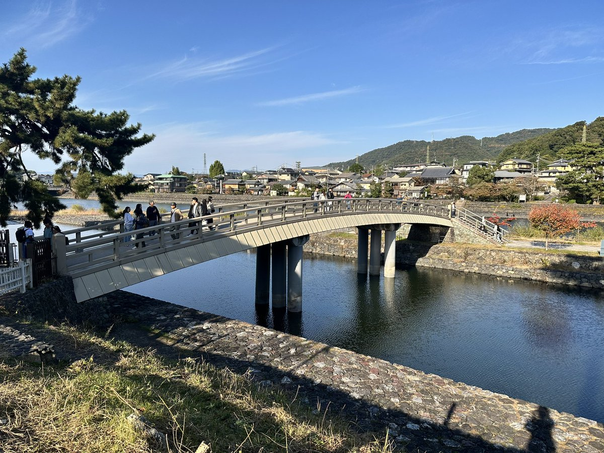

宇治
宇治最出名的是抹茶，中村藤吉，伊藤久右卫门等品牌的本店都在这里，不过这俩我这次都没去，游客太多了，懒得排队。
在这条河旁边坐了下，感觉地形有点像迷你版都江堰，刚想到这个就路过一个阿姨，说：“这宇治川咋个有点像我们都江堰，就是气势没那么大气”
中国人看大江大河久了，总是不容易觉察到细微的事物的美好，国人常说我们国家地大物博，我也觉得，九寨沟的水贡嘎的山，看多了我也觉得四川之外无山水，但实际上很多在我们身边的小细节就足够美好。长江很壮阔，最宽处是十几公里，府南河虽只有一百多米宽，也可以在边上喝喝茶吃点点心。贡嘎很高，7556米高，这东亚找不到几座比这更高的山，但奈良这小山坡，躺在草坪上晒晒太阳喂喂鹿，也挺好的。
宇治最出名的是抹茶，中村藤吉，伊藤久右卫门等品牌的本店都在这里，不过这俩我这次都没去，游客太多了，懒得排队。
在这条河旁边坐了下，感觉地形有点像迷你版都江堰，刚想到这个就路过一个阿姨，说：“这宇治川咋个有点像我们都江堰，就是气势没那么大气”
中国人看大江大河久了，总是不容易觉察到细微的事物的美好，国人常说我们国家地大物博，我也觉得，九寨沟的水贡嘎的山，看多了我也觉得四川之外无山水，但实际上很多在我们身边的小细节就足够美好。长江很壮阔，最宽处是十几公里，府南河虽只有一百多米宽，也可以在边上喝喝茶吃点点心。贡嘎很高，7556米高，这东亚找不到几座比这更高的山，但奈良这小山坡，躺在草坪上晒晒太阳喂喂鹿，也挺好的。
